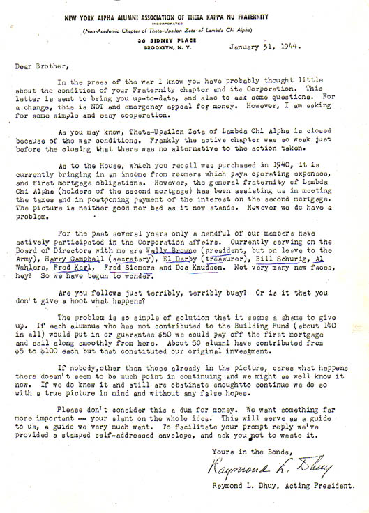

World War II - Trying Times for the ChapterAmerica's entry into World War II saw a major decline in college population and active fraternity membership--many college-age men were in the armed services. Theta-Upsilon was closed down during the war; the chapter was too weak to continue operations. The house corporation retained ownership of 36 Sidney Place, but the house was rented out to provide income to keep up the mortgage and tax payments. There was a serious concern that the chapter might not continue its existence. Eventually, as men returned from the army and college enrollment began to return to where it had been. The house corporation continued upkeep of the house and chapter membership began to rise. It should be noted that eventually the active house corporation consisted of one man--Elles M. Derby--who managed the chapter house finances, city and corporation taxes, and financing of house repairs. He served as a one-man house corporation until the 1970s. |